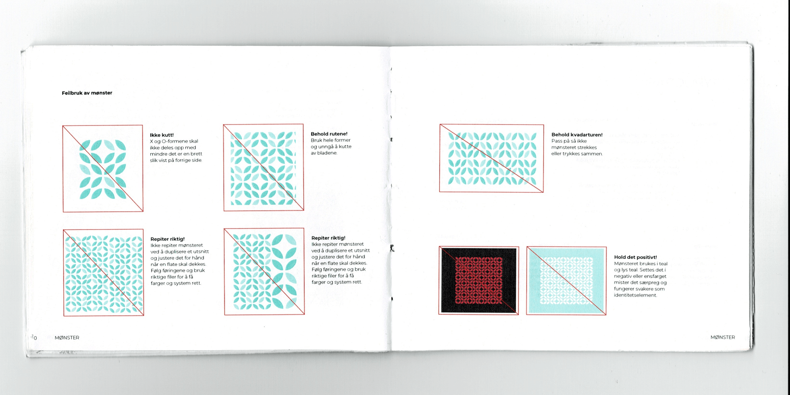
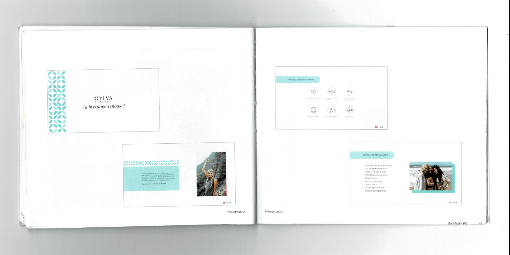
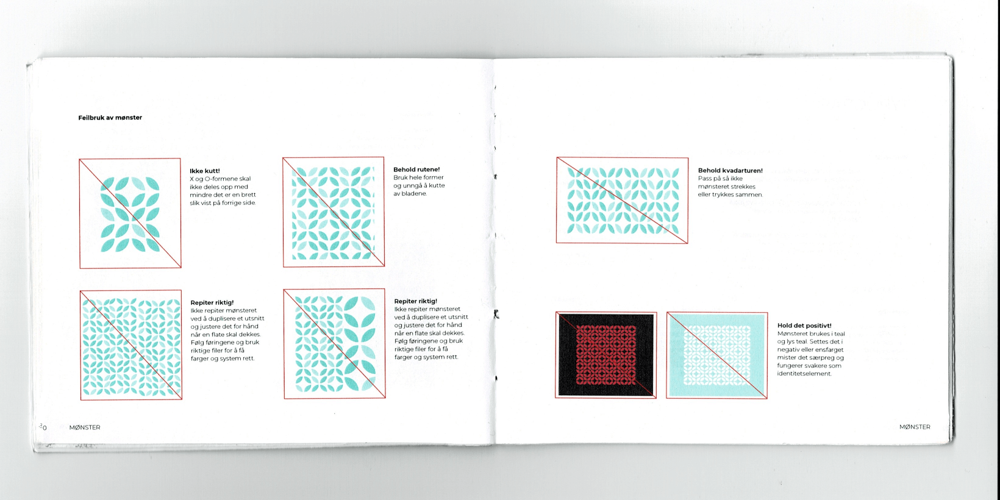
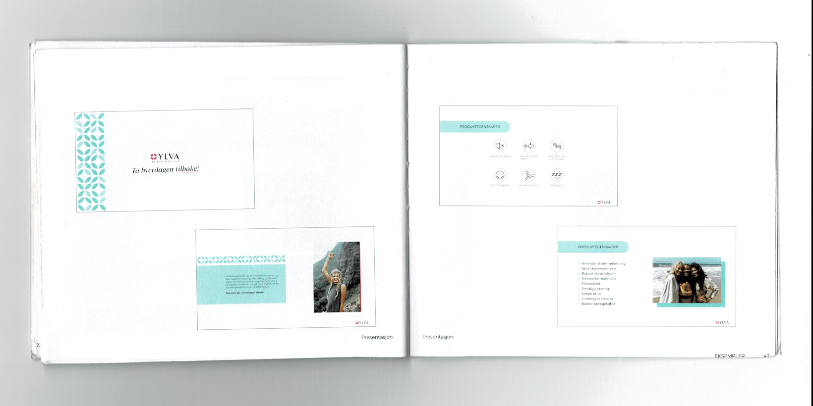

01
Identitetsdesign
YLVA BEKKENBELTE
Ved langvarig bekkenløsning
Om prosjektet
Gjennom bachelorprosjekt-emnet på VISKOM ble to medelever og jeg satt i kontakt med en påmeldt oppdragsgiver vi skulle arbeide med i en tre-måneders periode.
Oppdragsgiver
Vi ble introdusert for Renate Tonstad Flaten, en inspirert gründer lokal i Drammen. Hun møtte opp med en hjemmesnekret PowerPoint om sin visjon og sitt navnløse produkt - et bekkenbelte som imøtekommer behov nåværende produkter ikke gjør, for en trengende gruppe hun selv tilhører; kvinner med langvarig bekkenløsning. Hun ville gladelig ta i mot all hjelp vi aspirerende designere kunne komme med for å hjelpe produktet og bedriften hennes fremover.
Oppdraget
Å gi produktet en gjenkjennelig identitet som kan kommuniseres til interessenter, kunder og investorer.

Messemateriale
Strategisk grunnlag
Gjennom strategiske workshops med oppdragsgiveren arbeidet vi med å konkretisere hva merket skulle være: Friskt, sportslig og aktivt; slik at det kunne assosieres med bevegelse og muligheten til en aktiv livsstil. Trygt og troverdig slik at det kan holde en posisjon som medisinsk redskap som faktisk duger og gir lindring. Det skulle være norsk og bære en arv av hvor det ble laget selv når produktet lanseres i utlandet. Den norske ånden for friluft og god helse ville være et godt image med stolthet som oppdragsgiveren gjerne ville stå for.
"Ylva"
Med grunnleggende verdier definert drev vi navnutvikling og kom frem til forslaget Ylva. Navnet representerer en ung kvinne med vikingarv. Dette bærer assosiasjoner til moderlig omsorg, til styrke og mot, til friskhet og nærhet til naturen. Navnet er også estorisk nok til å ikke kun være et jentenavn, men et merkenavn. Vi presenterte prosess, assosiasjoner og forslag til oppdragsgiver som stilte seg positiv og lot navnet synke inn. I dag er Ylva et registrert AS.
Visuelt
Utfordringen lå i å balansere det medisinske mot det sportslige/friske. Designet skulle være rent, tydelig og moderne, og samtidig energisk og vennlig. Dette ble gjort med et floralt mønster bygd med avrundede, enkle former, en regi med mye whitespace, en sterk signalfarge, og milde sjøgrønne farger i møtet mellom business, medisin og sport.
Messemateriale [Video]
Løsning
Logo, mønster, fargepalett og typografi, samt føringer for bruk av alle elementene samlet i en designmanual. Disse føringene er også brukt i utformingen av kommunikasjonsmateriale for Ylva som kan brukes før lansering, som event-materiale og nyhetsbrev.
Printmateriale

Visittkort

Flyer

Banner
Mobilopplevelse

Topp av nettside

Produktegenskaper

Merkehistorie

Påmeldingsmodal

Nyhetsbrev
Etterarbeid Kommer snart!
I prosessbildene ser man tidligere løsning av logo og eksemplifisering. Dette har blitt arbeidet med videre etter eksamensinnlevering for å tilpasse seg behov og ønsker som dukket opp senere i prosessen. Løsningen presentert her på siden er min egen.
Emballasje
I starten av prosjektet var det stadig uklart hva vi skulle lage og vi hadde mange idéer til materiale. En ting vi var interessert i å levere var et forslag til innpakning til produktet. Dette er en mockup hvor jeg brukte den forrige versjonen av den visuelle profilen. Gjerne skulle vi hatt et produktbilde for å visuelt fortelle hva produktet er, men fordi produktet ikke er lagd enda, var det vanskelig. Vi brukte derfor andre slags belter og stropper for å illustrere produktet.


Produktbilde
Det var vanskelig et vanskelig produkt å kommunisere effektivt uten et tydelig bilde. Det er generelt lav kjennskap til hva bekkenbelter er, og hva som skiller dem. Ylva skal skille seg ut i både kvalitet og design, noe som ville vært ineffektivt å formidle kun gjennom tekst og ikoner. Derfor tegnet jeg en egen illustrasjon av beltet. Det må selvsagt byttes ut når produktet faktisk blir lagd, men det illustrerer bedre hva slags produkt det er snakk om.
Designmanual
Dummy håndhånd i lommeformat med føringer for bruk av designelementer. Inneholder tidligere logo, eksemplifiseringer og regler for bruk slik de ble overlevert til oppdragsgiver i forbindelse med eksamensinnleveringen.
 


